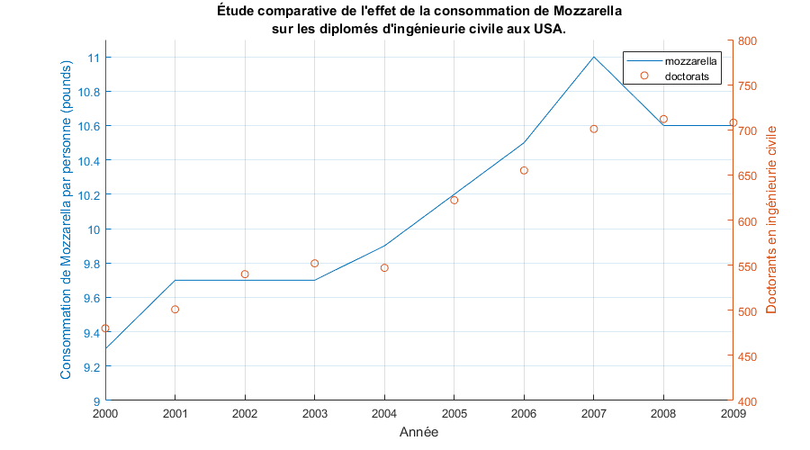
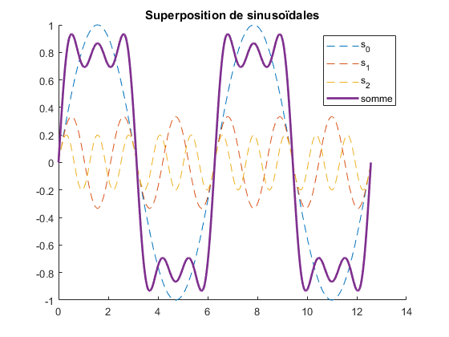
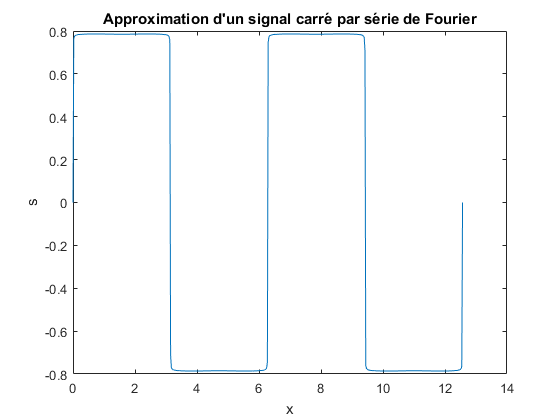
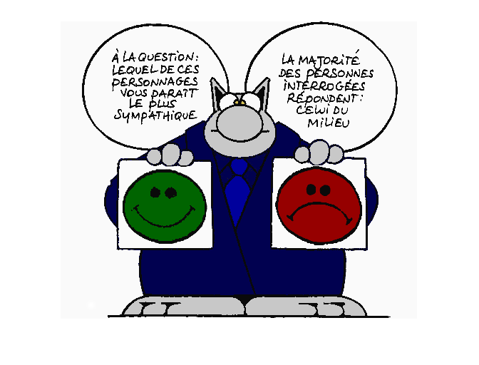
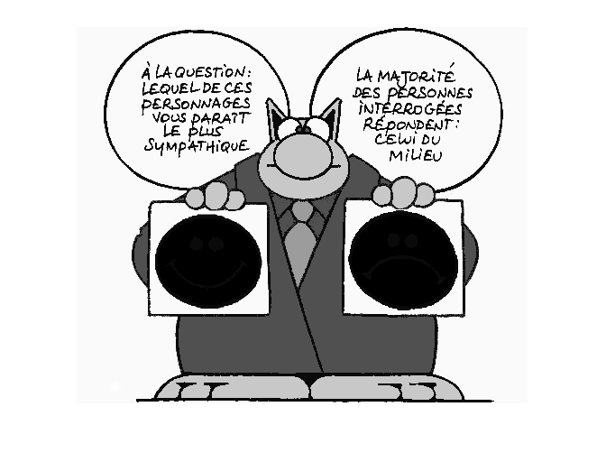
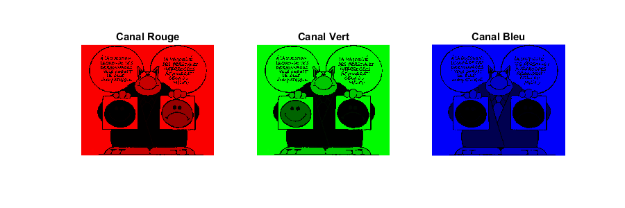
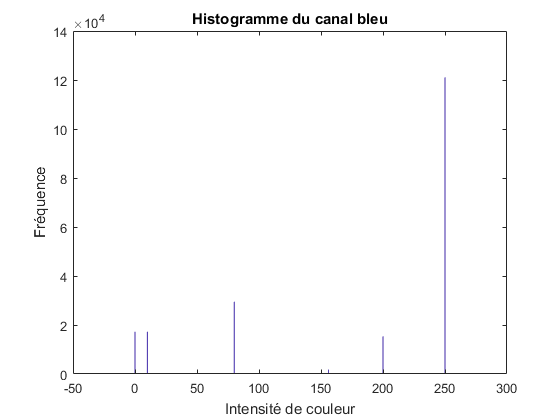
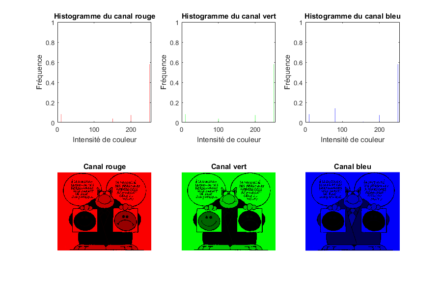
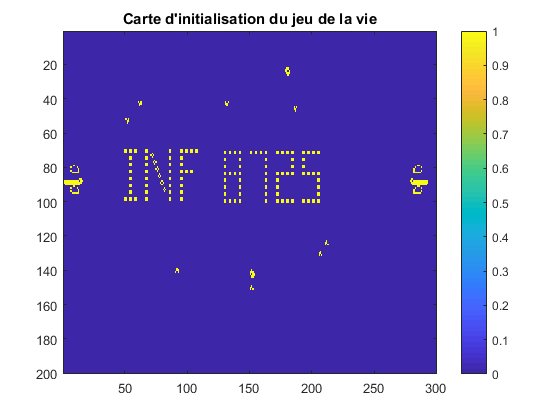
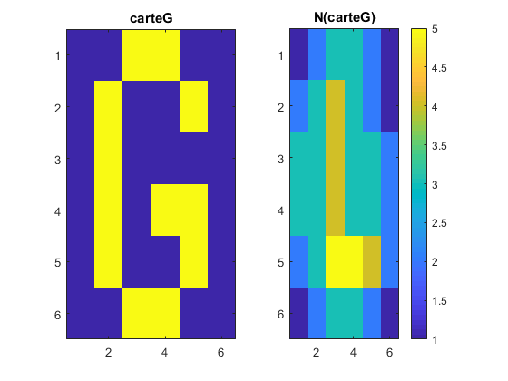

Contents
Nettoyage du Workspace
clear all; close all; clc;
Exercice I: Variables, Scripts, et Courbes
Initialisation des variables
load lab0_data.mat;
mozzarella = mozzarella';
mozzarella(2) = 9.7;
annee = 2000:2009;
Tracer du graphique
figure('pos', [10,10,900,500]) hold on; yyaxis left; plot(annee, mozzarella); xlabel('Année'); ylabel('Consommation de Mozzarella par personne (pounds)'); ylim([9, 11.1]); yyaxis right; scatter(annee, doctorats); xlabel('Année'); ylabel('Doctorants en ingénieurie civile'); ylim([400, 800]); legend('mozzarella', 'doctorats'); grid on; title({'Étude comparative de l''effet de la consommation de Mozzarella'; 'sur les diplomés d''ingénieurie civile aux USA.'}); % %%%%%%%%%%%%%%%%%%%%%%%%%%%%%%%%%%%%%%%%%%%%%%%%%%%%%%%%%%%%%%%%%%%%%%% %
Exercice II: Générer et tracer des signaux
close all; clear all;
Déclaration des signaux
s0 = @(x) sin(x); s1 = @(x) sin(3*x) / 3; s2 = @(x) sin(5*x) / 5; % Déclaration de x x = linspace(0, 4*pi, 500); % Tracer de la superposition figure('Name', 'Superposition de sinusoïdes'); hold on; plot(x, s0(x), '--'); plot(x, s1(x), '--'); plot(x, s2(x), '--'); plot(x, s0(x) + s1(x) + s2(x), 'LineWidth', 2); title('Superposition de sinusoïdales'); legend('s_0', 's_1', 's_2', 'somme');
Somme jusqu'à la 500eme harmonique
max_harmonique = 500; s = zeros(1, length(x)); for i=0:max_harmonique k = 2*i+1; h = sin(k*x) / k; s = s + h; end % Tracer du signal approximé figure('Name', 'Approximation d''un signal carré par série de Fourier'); plot(x, s); title('Approximation d''un signal carré par série de Fourier'); xlabel('x'); ylabel('s'); % %%%%%%%%%%%%%%%%%%%%%%%%%%%%%%%%%%%%%%%%%%%%%%%%%%%%%%%%%%%%%%%%%%%%%%% %
Exercice III: Images, Fonctions et Histogrammes
clear all; close all; clc;
Lecture et affichage de l'image
image = imread('chat.png'); imshow(image); % Affichage des valeurs min et max (peut être fait simplement en console) valeurMin = min(image(:)); valeurMax = max(image(:)); disp('-- Image de chat --'); disp(['min: ', num2str(valeurMin)]); disp(['max: ', num2str(valeurMax)]); % Affichage des dimensions de l'image (peut être fait simplement en console) dimensions = size(image); disp(['dimensions: ', num2str(dimensions)]);
-- Image de chat -- min: 0 max: 255 dimensions: 417 500 3
Affichage du canal bleu
imshow(image(:,:,3));
Affichage de tous les canaux en couleurs
figure('pos', [10,10,900,300]); subplot(1,3,1); imshow(extraireCanal(image, 1)); title('Canal Rouge'); subplot(1,3,2); imshow(extraireCanal(image, 2)); title('Canal Vert'); subplot(1,3,3); imshow(extraireCanal(image, 3)); title('Canal Bleu');
Calcul et affichage de l'histogramme bleu (peut être fait en console)
figure(); histogramme_bleu = imhist(image(:,:,3)); bar(0:255, histogramme_bleu); title('Histogramme du canal bleu'); ylabel('Fréquence'); xlabel('Intensité de couleur');
Affichage de tous les canaux en couleurs et de leurs histogrammes
figure('Name', 'Histogrammes', 'pos', [10,10,900,600]) subplot(2,3,1) tracerHistogramme(image, 1); subplot(2,3,4) imshow(extraireCanal(image, 1)); title('Canal rouge'); subplot(2,3,2) tracerHistogramme(image, 2); subplot(2,3,5) imshow(extraireCanal(image, 2)); title('Canal vert'); subplot(2,3,3) tracerHistogramme(image, 3); subplot(2,3,6) imshow(extraireCanal(image, 3)); title('Canal bleu'); % %%%%%%%%%%%%%%%%%%%%%%%%%%%%%%%%%%%%%%%%%%%%%%%%%%%%%%%%%%%%%%%%%%%%%%% %
Exercice IV: Images binaires, calcul matriciel, convolution et jeu de la vie
close all; clear all; clc; load lab0_data.mat; % Affichage de la carte imagesc(carte); colorbar; title('Carte d''initialisation du jeu de la vie'); % L'équation matricielle en fonction de E et N peut s'écrire: % (N == 3) + (E .* N == 4)
Définition de N en utilisant une convolution
N = @(map) conv2(map, ones(3,3), 'same'); % Vérification de N sur carteG subplot(1,2,1); imagesc(carteG); title('carteG'); subplot(1,2,2); imagesc(N(carteG)); colorbar; title('N(carteG)');
LE JEU DE LA VIE
E = carte; fenetreJeu = figure('Name', 'Jeu de la vie'); while( ishghandle(fenetreJeu) ) imagesc(E); E = (N(E) == 3) + (E.*N(E) == 4); pause(0.01); end